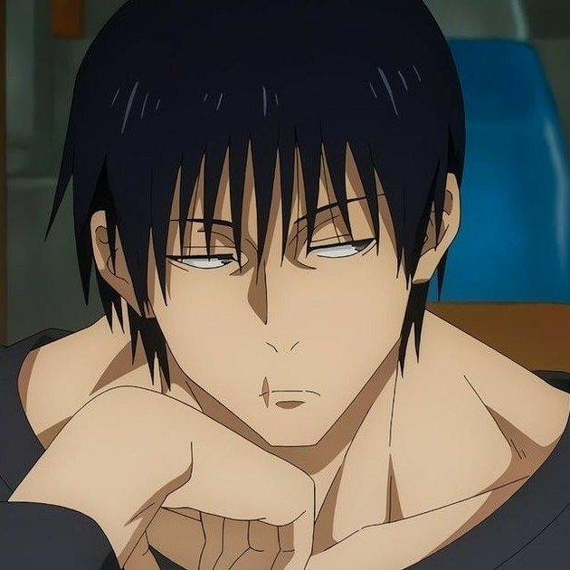
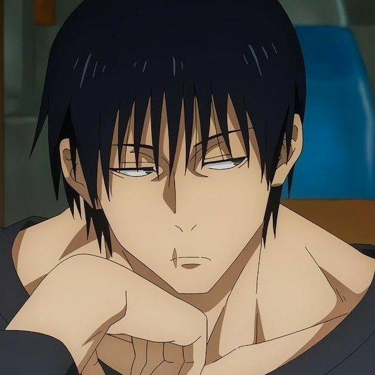
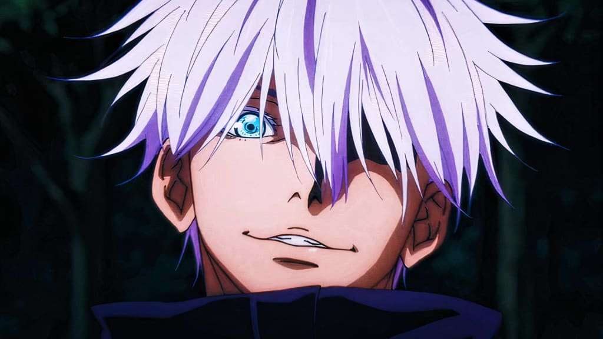
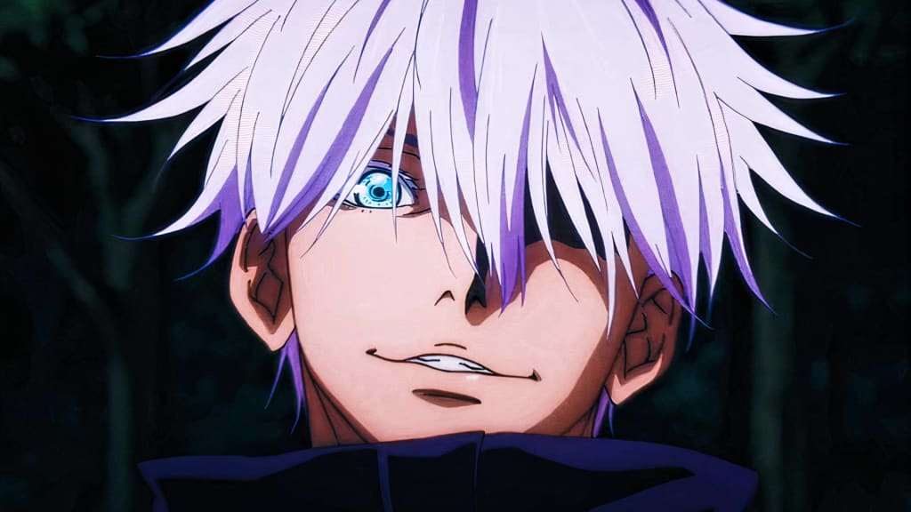
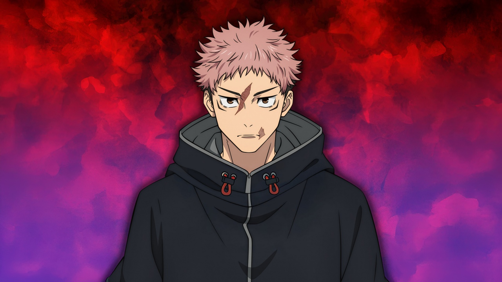
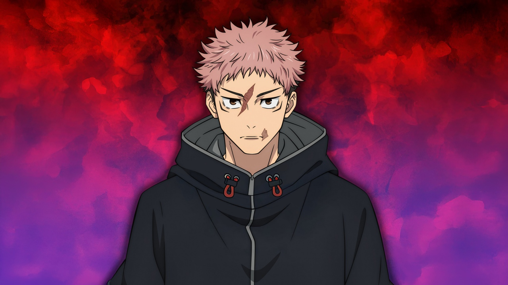

 

 

Megumi Fushiguro é um dos principais personagens (deuteragonista) da série Jujutsu Kaisen, criado por Gege Akutami. Ele é um feiticeiro jujutsu de classe 2 e aluno do primeiro ano na Escola Técnica de Jujutsu de Tóquio. Descendente do influente clã Zen'in, Megumi é conhecido por sua técnica inata, a Técnica das Dez Sombras, que lhe permite invocar shikigamis poderosos através de sombras. Principais detalhes sobre Megumi Fushiguro: Mentor: Foi acolhido e treinado por Satoru Gojo, após ser encontrado fora do clã Zen'in. Personalidade: Apesar de parecer frio e distante, Megumi é leal e se importa profundamente com seus amigos, incluindo Yuji Itadori e Nobara Kugisaki. Habilidades: Mestre no combate corpo a corpo e uso de armas, sendo um dos poucos feiticeiros de sua idade capaz de realizar uma Expansão de Domínio (Jardim das Sombras Quimera). Relações: É meio-irmão de Tsumiki Fushiguro e filho de Toji Fushiguro, um infame assassino de feiticeiros. Importância: Reconhecido por possuir um enorme potencial de crescimento, sendo cobiçado pelo clã Zen'in e notado por Sukuna.
Toji Fushiguro é um influente antagonista em Jujutsu Kaisen, conhecido como "Assassino de Feiticeiros" (Sorcerer Killer) e ex-membro do clã Zenin. Com Restrição Celestial que elimina sua energia amaldiçoada em troca de força física, velocidade e sentidos sobre-humanos, ele foi um dos poucos capazes de rivalizar com Satoru Gojo.
Estudante do terceiro ano da Escola Técnica Superior de Jujutsu de Quioto e feiticeiro de Grau 1, foi orientado na juventude por Yuki Tsukumo, feiticeira jujutsu de Grau Especial. Aoi é conhecido por sua força bruta e habilidades em combate, além de sua personalidade extrovertida e excêntrica. Ao longo da série, Aoi desenvolve uma forte ligação com Yuji Itadori, a quem considera seu melhor amigo. Sua relação com Yuji é marcada por um respeito mútuo e uma camaradagem que se manifesta tanto em batalhas quanto em momentos de treinamento. Ademais, é um lutador habilidoso, capaz de utilizar técnicas amaldiçoadas poderosas.
Satoru Gojo ( em japonês :五条悟, Hepburn : Gojō Satoru ), frequentemente conhecido como O Honrado , é um personagem fictício do mangá e anime Jujutsu Kaisen,de Gege Akutami . Ele foi apresentado pela primeira vez na minissérie Tokyo Metropolitan Curse Technical School como mentor do adolescente amaldiçoado Yuta Okkotsu , que sofre com a maldição de Rika. Esta minissérie tornou-se o prelúdio Jujutsu Kaisen 0 de Jujutsu Kaisen . Na série principal de Jujutsu Kaisen , Gojo assume o mesmo papel, mas agora como mentor do estudante Yuji Itadori ,que sofre com a maldição de Sukuna , ajudando-o a se tornar mais forte enquanto protege outros personagens da série.
Yuta Okkotsu (乙骨憂太, Okkotsu Yūta) é um personagem fictício e o protagonista do mangá Jujutsu Kaisen 0 feito por Gege Akutami. Ele é um jovem cercado e auxiliado pelo espírito amaldiçoado de Rika Orimoto, sua amiga de infância que morreu seis anos antes do enredo e amaldiçoada por causa da promessa de casamento feita quando eram crianças. Em novembro de 2016, Yuta cruzou o caminho de Satoru Gojo, um feiticeiro jujutsu, e, sob sua orientação, ingressou na Escola Técnica Superior de Jujutsu de Tóquio para dominar a maldição de Rika. Yuta também desempenha um papel na sequência Jujutsu Kaisen como um lutador experiente. Akutami deu vida a Yuta e Rika antes da criação de Jujutsu Kaisen 0 como uma dupla colaboradora e comparou o personagem e o protagonista de Jujutsu Kaisen, Yuji Itadori, cujas trajetórias narrativas assemelham-se ao lidar com entidades internas de personalidades distintas. Na adaptação para anime do mangá em 2021, Yuta é dublado por Megumi Ogata em japonês e Pedro Alcântara em português.
Yuji Itadori (虎杖悠仁, Itadori Yūji) é um personagem fictício e o protagonista da série de anime e mangá Jujutsu Kaisen criado por Gege Akutami. Yuji é um feiticeiro do primeiro ano, que entrou no mundo da bruxaria depois de comer um dos vinte dedos pertencentes a Ryomen Sukuna, um poderoso espírito amaldiçoado, um ser manifestado a partir da energia amaldiçoada das emoções negativas que fluem nos humanos. Com seus colegas Megumi Fushiguro e Nobara Kugisaki, Yuji exorciza maldições enquanto tenta honrar o legado de seu avô e salvar outros incondicionalmente para que quando for executado após comer os vinte dedos, ele não morra simplesmente. Ao longo da série, a destreza sobre-humana e as excepcionais técnicas amaldiçoadas de Yuji se desenvolvem à medida que ele enfrenta várias maldições e o recuo emocional de suas ações.